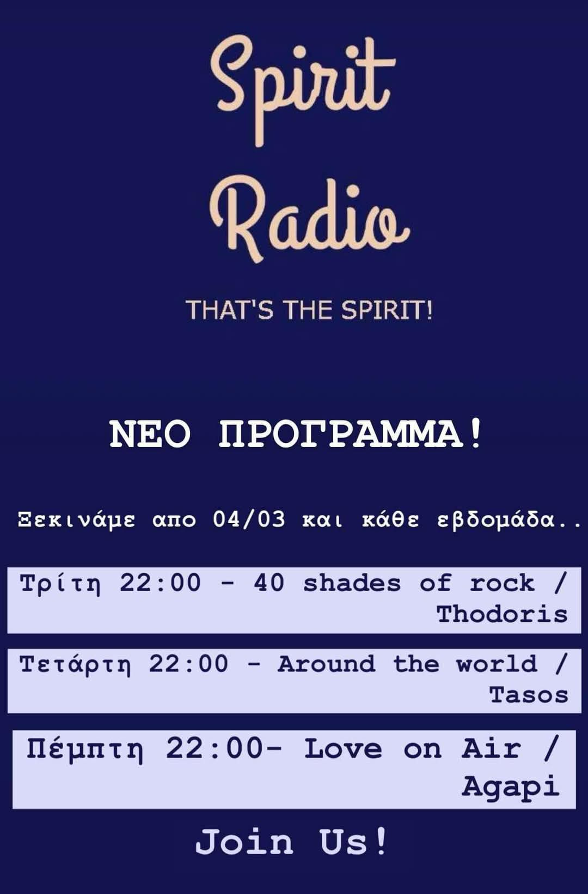

X

Το πρόγραμμα προβολής σας δεν υποστηρίζει τον ενσωματωμένο ήχο. Πατήστε εδώ για τον εξωτερικό player.
Για συμμετέχετε στο chat πρέπει να επιλέξετε ένα nickname
Για να καταχωρηθεί το nickname και να στείλετε το μήνυμα, πρέπει να πατήσετε το Enter/Go στο πληκτρολόγιο της συσκευής
Αν δεν εμφανίζεται το chat πατήστε
εδώ
.